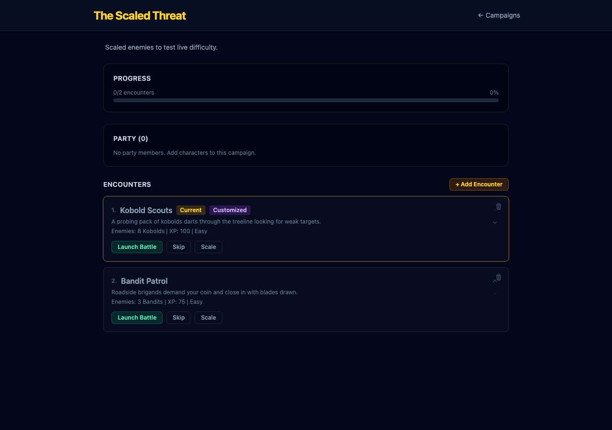

Encounter card header now shows live-calculated difficulty instead of the stale template value after enemy scaling.
Card header computes difficulty live via calculateDifficulty(), passing enemyOverrides when present. The Customized badge shows when enemies are scaled. Both card header and Scale panel stay in sync.

src/components/campaign/EncounterListEditor.tsx — Added getEffectiveDifficulty() helper; replaced static encounter.difficulty with the live-calculated value.